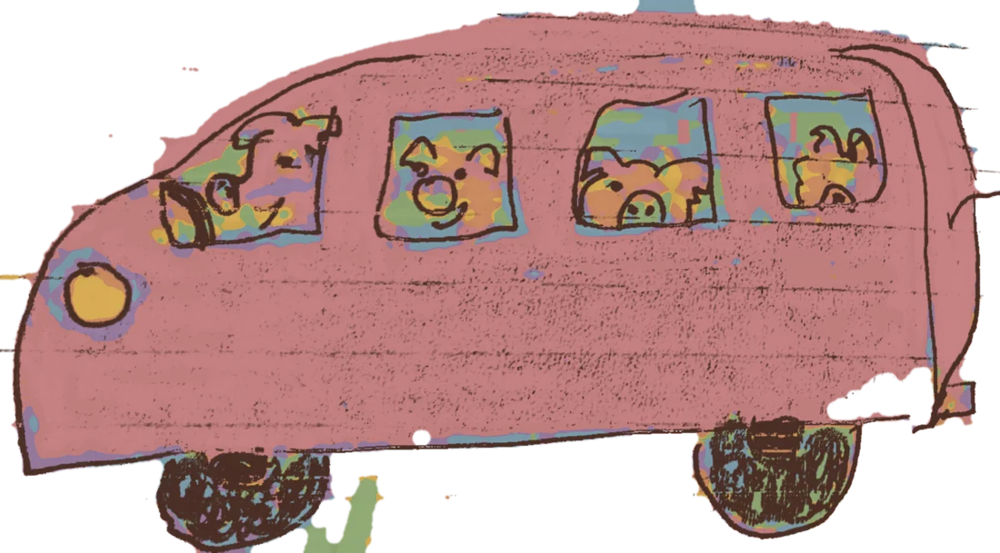
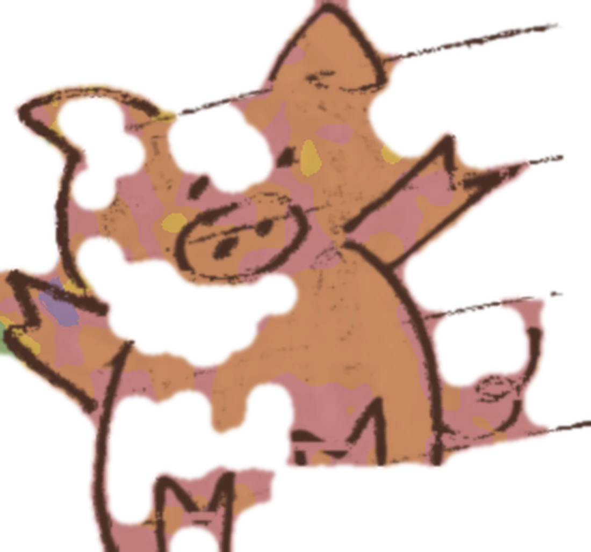

Bus Driver Pig's Wild Ride
Draft story, written to fill this space. Nana's own version is coming.

Bus Driver Pig drives the red bus, and Bus Driver Pig drives it fast. The bus has a television and a cup holder, and four round windows, and a pig smiling out of every one.
When the animals hear the bus coming, they scramble up the big tree to get out of the way. One pig sits on the lowest branch and waves. The cats climb all the way to the top. Mudpie, who is orange and spotted and curls around the bottom of the trunk, does not climb anywhere. Mudpie just waves.
The girl does not climb either. She waits in her swing, swinging higher and higher, because when the bus zooms by underneath her, it feels like flying.
Where is Bus Driver Pig going in such a hurry? Somewhere wild. Somewhere far. And every December, the animals hang a green banner on the tree that says MERRY CHRISTMAS BUS DRIVER PIG!, so that wherever the bus is going, it knows it is loved.
